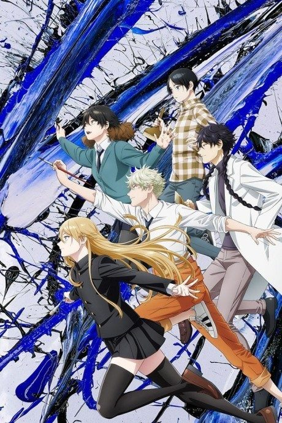
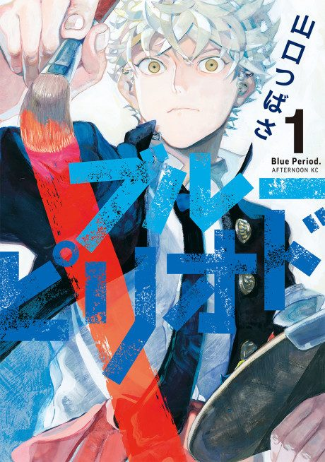

Anime
MangaEpisodes numbered 1–12 (single season, 2021).
Yatora Yaguchi, a popular student who coasts through life, is moved by a painting and finds his first real passion.
Yatora joins a prep school for art entrance exams and meets far more experienced rivals.
The first stage of the Tokyo University of the Arts entrance exam arrives.
Yatora's friend Ryuji, struggling with identity and family pressure, drops out of their exam and runs away.
Yatora takes the multi-day second exam that decides his future.